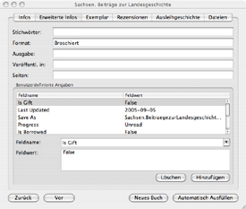

Der Reiter „Erweiterte Infos”
Das Informationsfenster besteht aus sechs Reitern. Um das Informationsfenster
aufzurufen, klicken Sie doppelt auf den jeweiligen Bucheintrag oder klicken
Sie das Symbol „Infos einblenden”, welches sich in der Symbolleiste
befindet, an. Weitere Informationen können über den Reiter „Erweiterte Infos” geändert
werden.

Verfügbare Einträge
- Stichwörter
- Format
- Ausgabe
- Veröffentl. in - Abkürzung für „Veröffentlicht in”
- Seiten
- Feldname
- Feldwert
Benutzerdefinierte Angaben
Für manche Zwecke reichen die Angaben, die von Books vorgegeben werden, nicht aus. Books bietet Ihnen aber die Möglichkeit, weitere Angaben zu machen.
Tragen Sie zunächst einen Namen für die zusätzliche Angabe in dem Feld „Feldname” ein und weisen Sie dem Feldnamen über das Feld „Feldwert” einen Wert zu. In dem obengezeigten Beispiel wurde der Angabe „Is Gift” (ist ein Geschenk) der Wert „False” (Nein) zugewiesen.
Wenn Sie die Felder Feldname und Feldwert ausgefüllt haben, klicken Sie die Taste „Hinzufügen” an. Ihre Angaben werden nun in dem Fenster „Benutzerdefinierte Angaben” angezeigt. Um einen Eintrag zu entfernen, klicken Sie den jeweiligen Eintrag an und klicken Sie auf die Taste „Löschen”.